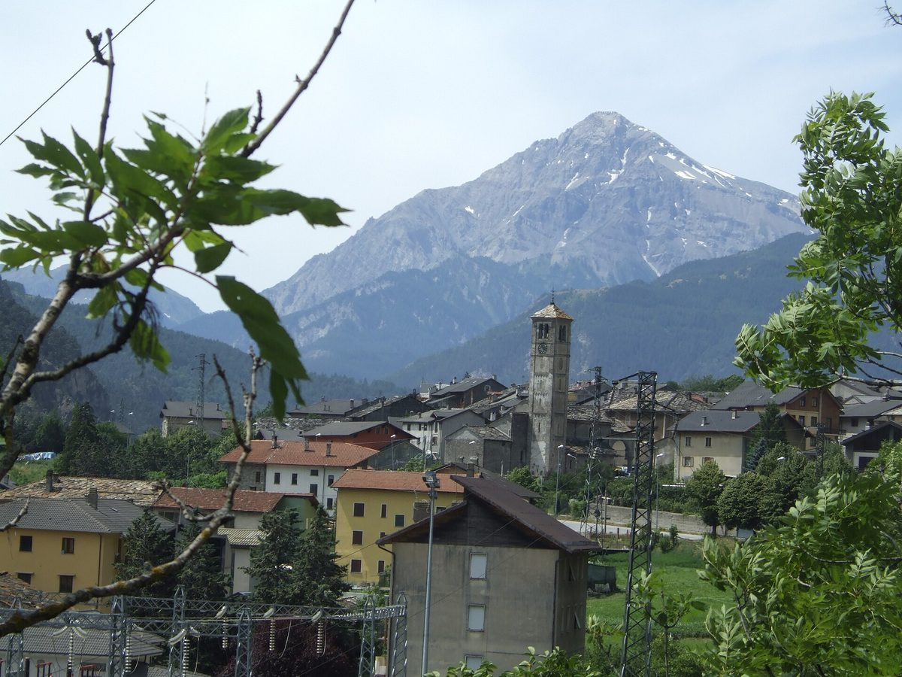

이탈리아 알프스 산골 살베르트랑·엑실레스에 재생에너지공동체…별장 지붕 태양광 전기를 상주 주민이 쓰고 공동 수익은 지역 연대사업에

2024년 설립된 CER 시네르지가 추진, 같은 1차 변전소 권역의 시민·중소기업·지자체 참여…첫 생산자 확보 뒤 새 소비자와 2025년 이후 설비 생산자 모집
이탈리아 피에몬테주 수사 계곡 위쪽의 두 산간 마을 살베르트랑(Salbertrand)과 엑실레스(Exilles)가 함께 재생에너지공동체(CER)를 꾸린다. 공동체는 2024년 피에몬테에서 만들어진 CER 시네르지(CER Sinergie)가 추진하며, '바존(Vazon)'이라는 같은 1차 변전소 권역 안의 시민과 중소기업, 지자체가 회원으로 참여할 수 있다. 회원 설비가 쓰고 남은 태양광 전기를 전력망에 보내면 다른 회원이 이를 소비하고, 이렇게 공유된 전기에는 생산자가 받는 판매 요금과 별도로 인센티브가 붙는다. 별장이 많은 산간 지역의 특성을 살려 주인이 머물지 않는 동안에도 별장 지붕 태양광이 만든 전기를 상주 주민이 쓰도록 한 것이 특징이며, 에너지 공유로 생긴 공동 수익은 지역 주민을 위한 연대·윤리 사업에 쓰인다. 공동체는 첫 생산자들을 정한 데 이어 지역의 새 소비자와 2025년 이후 설치한 설비를 가진 생산자를 더 모으고 있다.
시민에너지 관점
같은 피에몬테주의 발펠리체 공동체가 출범 때 6명이던 회원을 154명으로 늘린 것처럼, 작은 재생에너지공동체도 이웃을 하나씩 묶어 가면 지역 전체의 발전소가 된다. 빈집과 별장이 많은 산골에서 공동체가 꾸려지겠느냐는 우려가 있을 수 있지만, 이 공동체는 비어 있는 별장의 지붕을 오히려 상주 주민의 전기 공급원으로 바꿔 놓았다. 지붕 주인과 이웃, 지자체가 한 공동체의 회원이 되고 그 수익을 마을 연대사업에 돌려야 전기와 돈이 마을 안에서 돈다. 국내 농산어촌의 빈집·별장·마을회관 지붕도 주민이 함께 소유하는 햇빛소득마을의 자원이 될 수 있도록, 같은 변전소 권역 안에서 전기를 나눠 쓰는 제도부터 열어야 한다.
출처: 쿠오티디아노 피에몬테세(Quotidiano Piemontese) 2026-10-25 키아라 셰르바(Chiara Scerba) 원문 보기
イタリア・アルプスの山村サルベルトランとエクシッレスに再エネ共同体…別荘の屋根の太陽光の電気を定住住民が使い、共同の収益は地域の連帯事業に
2024年設立のCERシネルジエが推進、同じ一次変電所の区域内の市民・中小企業・自治体が参加…最初の発電者を確保し、新たな消費者と2025年以降の設備を持つ発電者を募集
イタリア北部ピエモンテ州スーザ渓谷上流の二つの山村、サルベルトラン（Salbertrand）とエクシッレス（Exilles）が共同で再生可能エネルギー共同体（CER）をつくる。共同体は2024年にピエモンテで設立されたCERシネルジエ（CER Sinergie）が推進し、「ヴァゾン（Vazon）」という同じ一次変電所の区域内の市民、中小企業、自治体が会員として参加できる。会員の設備が使い切れなかった太陽光の電気を送電網に送ると別の会員がそれを消費し、こうして共有された電気には発電者が受け取る売電料金とは別にインセンティブが付く。別荘の多い山間地の特性を生かし、持ち主が滞在していない間も別荘の屋根の太陽光がつくった電気を定住する住民が使えるようにしたのが特徴で、エネルギー共有で生まれた共同の収益は地域住民のための連帯・倫理的な事業に充てられる。共同体は最初の発電者を決めたのに続き、地域の新たな消費者と2025年以降に設置した設備を持つ発電者をさらに募っている。
市民エネルギーの視点
同じピエモンテ州のヴァル・ペッリチェ共同体が発足時の会員6人を154人に増やしたように、小さな再エネ共同体も近所を一つずつ結んでいけば地域全体の発電所になる。空き家や別荘の多い山村で共同体が成り立つのかという懸念もあるだろうが、この共同体は空いている別荘の屋根をむしろ定住住民の電力源に変えた。屋根の持ち主と隣人、自治体が一つの共同体の会員となり、その収益を集落の連帯事業に回してこそ、電気とお金が地域の中で回る。韓国の農山漁村の空き家・別荘・集会所の屋根も住民が共同で所有する「日差し所得村」の資源になれるよう、同じ変電所の区域内で電気を分け合える制度からまず開くべきだ。
出典: クオティディアーノ・ピエモンテーゼ（Quotidiano Piemontese） 2026-10-25 キアラ・シェルバ（Chiara Scerba） 原文を読む
意大利阿尔卑斯山村萨尔贝尔特朗和埃克西莱斯组建可再生能源社区…度假屋屋顶光伏电力供常住居民使用，共同收益用于当地互助项目
由2024年成立的CER Sinergie推动，同一一次变电站区域内的市民、中小企业和地方政府可参加…确定首批发电者后，继续招募新的用电者和拥有2025年以后设备的发电者
意大利北部皮埃蒙特大区苏萨河谷上游的两个山村萨尔贝尔特朗（Salbertrand）和埃克西莱斯（Exilles）将共同组建可再生能源社区（CER）。该社区由2024年在皮埃蒙特成立的CER Sinergie推动，名为"Vazon"的同一一次变电站区域内的市民、中小企业和地方政府都可以成为会员。会员设备自用后多余的光伏电力送入电网后由其他会员消费，这部分共享电力除发电者获得的售电电价外还可获得激励。该项目的特点是结合度假屋较多的山区特点，让度假屋屋顶光伏在业主不在时发的电也能供常住居民使用；能源共享产生的共同收益将用于为当地居民开展的互助和伦理项目。社区在确定首批发电者之后，正继续招募当地新的用电者以及拥有2025年以后安装设备的发电者。
市民能源视角
正如同在皮埃蒙特大区的佩利切河谷社区把会员从成立时的6名增至154名，小型可再生能源社区只要把邻里一户户联结起来，也能成为整个地区的发电站。有人或许担心空房和度假屋较多的山村难以组成社区，但这个社区反而把闲置度假屋的屋顶变成了常住居民的电力来源。只有让屋顶的主人、邻居和地方政府成为同一社区的会员，并把收益投入村里的互助项目，电力和资金才能在村内循环。韩国农山渔村的空房、度假屋和村民会馆屋顶也应能成为居民共同拥有的"阳光收入村"资源，为此首先要开放在同一变电站区域内共享电力的制度。
来源: 皮埃蒙特日报（Quotidiano Piemontese） 2026-10-25 Chiara Scerba 查看原文
Alpine villages of Salbertrand and Exilles in Italy form a renewable energy community, with holiday-home rooftop solar powering year-round residents and shared earnings going to local solidarity projects
Led by CER Sinergie, founded in 2024; open to citizens, small businesses and local authorities under the same primary substation; after signing up its first producers, it is recruiting new consumers and producers with systems installed from 2025
Salbertrand and Exilles, two mountain villages in the upper Susa Valley in Italy's Piedmont region, are forming a joint renewable energy community (CER). The community is being set up by CER Sinergie, set up in Piedmont in 2024, and citizens, small and medium-sized businesses and local authorities within the area of the same primary substation, known as Vazon, can join as members. Surplus solar power that members' systems feed into the grid is consumed by other members, and this shared electricity earns an incentive on top of the sale price producers receive. A distinctive feature suited to a mountain area with many holiday homes is that rooftop solar on those homes keeps supplying power to permanent residents even when the owners are away, and the shared earnings from energy sharing will go to solidarity and ethical projects for local people. Having identified its first producers, the community is now seeking new local consumers and more producers with systems installed from 2025 onward.
Citizen Energy View
Just as the Val Pellice community elsewhere in Piedmont grew from six members at launch to 154, a small energy community can become a power plant for a whole area by bringing in neighbours one by one. Some may doubt that a community can take shape in mountain villages full of empty houses and holiday homes, but this one has turned the roofs of unoccupied holiday homes into a power source for year-round residents. Electricity and money circulate within a village only when rooftop owners, neighbours and the local authority become members of one community and its earnings go back into local solidarity projects. Korea should begin by opening rules that let people share power within the same substation area, so that the roofs of empty houses, holiday homes and village halls in rural and coastal areas can become resources for resident-owned sunlight income villages.
Source: Quotidiano Piemontese 2026-10-25 Chiara Scerba Read the original